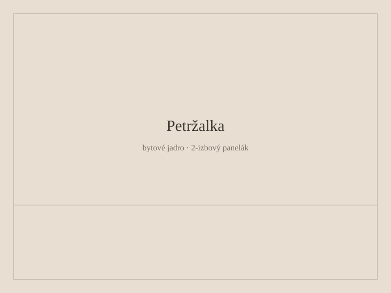

Rekonštrukcia bytového jadra v Bratislave
Vymieňame umakartové jadrá v panelákoch zo 70. a 80. rokov. Umakart ide preč, kúpeľňa a WC sa vymurujú.

Väčšinu týždňov sme v Petržalke, Ružinove alebo Dúbravke. Jadrá sú podobné. Stupačky sú tam, kde sú. Všetko sa posunúť nedá.
Bežná zákazka je dvanásť až štrnásť dní. V byte sa dá spať, ale kúpeľňu a WC ten čas nemáte.
Správca o tom zvyčajne chce vedieť. Vieme sa s ním porozprávať. Keď ide o stupačku alebo nosnú stenu, povieme to pred začiatkom prác.
Čo je v cene
Búranie a odvoz sutiny, murovanie, hydroizolácia, obklad, dohodnutá sanita a začistenie okolitých stien.
Čo v cene nie je
Nábytok, dizajnové batérie, ktoré si kúpite sami, a prekvapenia v stupačke. Tie naceníme, keď ich uvidíme.
Často kladené otázky
Koľko stojí jadro v Bratislave?
Bežné panelákové jadro je často niekde medzi 6 500 a 12 000 €, podľa veľkosti a vybavenia. Kalkulačka na webe dá rozpätie. Skutočné číslo je po obhliadke.
Ako dlho to trvá?
Dvanásť až štrnásť dní, keď sa stupačka správa. Keď je odpad zlý, trvá to dlhšie. Povieme to.
Treba súhlas správcu?
Pri jadre zvyčajne áno — aspoň ohlásenie. Niektoré bytovky chcú písomnú dohodu. Robili sme to.
Dá sa bývať počas prác?
Spať áno. Sprchovať sa nie. Hodí sa sused so záchodom. Niektorí idú na dva týždne k rodine.
Dá sa spojiť kúpeľňa a WC?
V paneláku často áno. Nie vždy. Závisí od stupačky a stien. Povieme na obhliadke.